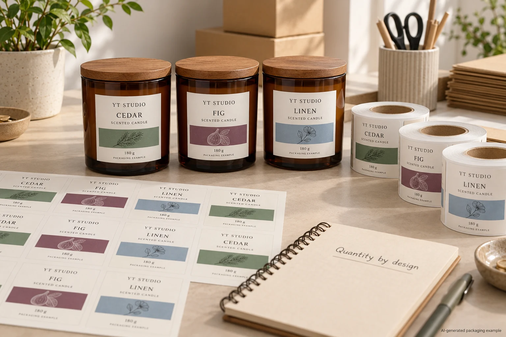
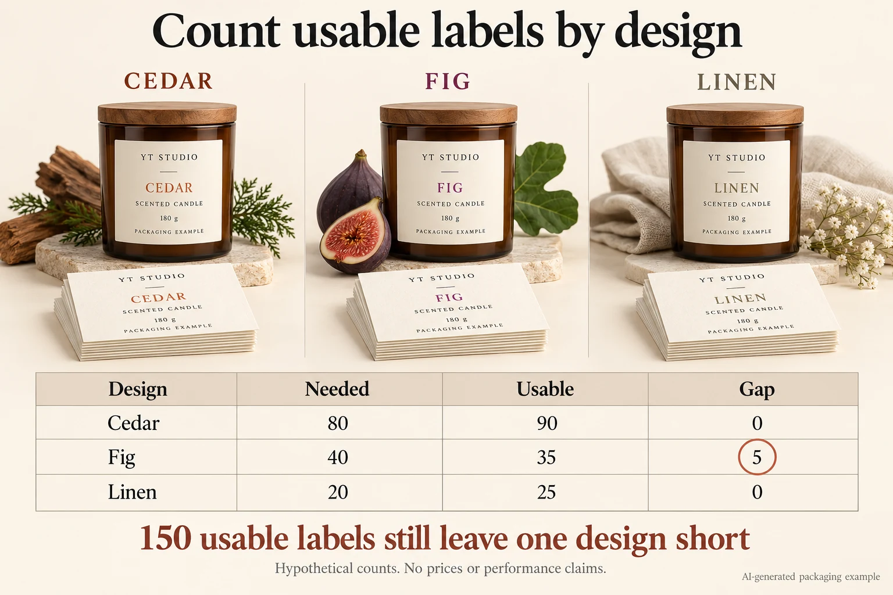

A small candle range can look economical on paper and still leave one scent waiting for labels. The printer's total is attractive. The sheets are affordable. But neither number tells the owner what it will cost to label the actual mix due this week.
Compare DIY and custom printing against the same artwork, quantity by design and acceptance requirements. Then calculate usable output, current-demand coverage and two separate costs: cash needed now and the resources consumed by the run. I would not buy a printer or approve an outsourced order from a headline price per sticker.

A real question, without an automatic outsourcing answer
In a candle maker's Reddit discussion about home printing, the author describes the expense of repeatedly buying many identical labels while wanting more customized designs. Replies include people who like their home-printing arrangements for small batches. Those accounts make the comparison worth examining; they do not establish typical costs, independently verified durability or a universal winning route.
The useful purchasing question is narrower: can each route supply this particular mix, at an acceptable result, with a cost and workload the business can support? A successful DIY arrangement is a valid outcome. Outsourcing should earn its place in the comparison.
Define one label before counting money
Start with one component: for example, the front branding label on each jar. List every design and approved revision, its required quantity, dimensions and agreed construction. If the pack also needs a base label, cost that component separately. A surplus of front labels cannot complete missing base labels.
For each route, enter produced or supplied quantity and the quantity unavailable for this job. Keep rejects, setup use and retained samples in separate notes, but subtract each physical label only once. Uninspected or unresolved stock is not confirmed usable stock. Forecasts need to be identified as forecasts and replaced with observed counts later.
Material, print and application acceptance remain gates outside the arithmetic. A vendor's word such as waterproof, or an online anecdote about heat, does not qualify an assembled candle package. Have the responsible packaging and product-safety people agree the required assessment for the actual container, construction and intended use.
Use a worksheet that exposes the missing design
Download the blank make-or-buy worksheet (CSV). It contains input rows and formula instructions, not automatic calculations or supplier prices. Copy it once for DIY and once for an outsourced proposal. Use the same currency and comparison period, and keep the source of each number beside it.
| Input or result | How to enter it | What it changes |
|---|---|---|
| Required quantity, N | Current need for each approved design and component | Defines the mix each route must cover |
| Usable quantity, U | Produced/supplied minus distinct unavailable labels | Excludes unusable or unresolved output |
| Covered quantity | The smaller of N and U, calculated separately for every design | Prevents surplus designs hiding a shortage |
| Gap and surplus | Gap = max(N − U, 0); surplus = max(U − N, 0) | Shows missing supply and stock beyond current need |
| Operating amounts, R | Keep cash payable now separate from supplies consumed or the external print quote attributed to the run; identify preparation, delivery and relevant taxes | Existing supplies can have a run cost without another payment now |
| Labor and equipment | Separate paid labor, unpaid time value, new equipment cash and allocated equipment use | Keeps cash commitment distinct from resource cost |
First complete the quantity rows. Then reconcile the cost rows to receipts, an identified quote or an explicitly labeled estimate. A blank is unknown, not zero. Use zero only when the cost genuinely does not apply. Do not divide by zero usable output or present an incomplete route as ready to order.

Here is a hypothetical quantity check. Cedar needs 80 labels, Fig 40 and Linen 20. Usable quantities are 90, 35 and 25. There are 150 usable labels for a total requirement of 140, but coverage is only 135: 80 + 35 + 20. Fig is short by five. The 15 surplus labels belong to other designs and cannot close that gap.
Separate cash today from cost attributed to the run
For cash needed now, add operating payments due now, incremental paid labor due now and any equipment purchase required now. Buying a whole supply pack can require more cash than the portion consumed by this run. Existing supplies and equipment already paid for do not create another purchase payment now.
For planning cost, use the supplies actually consumed or the external print quote attributable to this run, associated preparation and delivery, labor attributable to the run, an explicitly chosen value for unpaid working time and an allocation for your equipment use. Keep payment timing separate. Exclude the full equipment purchase from this calculation: adding both its full purchase price and an allocation would count the asset twice. The allocation is your stated planning assumption, not a depreciation or tax recommendation.
Keep paid and unpaid hours separate. If someone's time is already in the paid-labor line, do not value those hours again as unpaid work. For a print quote, retain its actual total; do not invent a breakdown of the supplier's internal labor or machine cost.
Suppose, purely for arithmetic, a fully covered run has planning cost of 60 currency units, 150 usable labels and 120 labels needed now. Cost per usable label is 60 ÷ 150 = 0.40. Cost attributed to labels serving current demand is 60 ÷ 120 = 0.50. Both describe the same assumed spend with different denominators. Neither is a real print price or proof that the surplus will sell.
Let the job decide which route deserves the work
For a hypothetical owner with suitable equipment, established output and frequent small artwork changes, DIY may preserve flexibility without a new capital payment. Count checking, printing, cutting and rework time honestly. If that workload fits the schedule and the accepted output covers each design, a supplier's larger order may offer little practical benefit.
For another brand, stable artwork and a confirmed repeat mix may make an outsourced proposal attractive, particularly when in-house production would displace work the owner needs to do. That remains conditional on the actual quote, usable supply, delivery commitment and acceptance result. There is no defensible universal quantity at which every candle brand should switch.
Stop the comparison when a design is short, a major cost is unknown, the required appearance or application is unapproved, or the needed date is unconfirmed. Ask the responsible supplier or operator to resolve that item, then recalculate. A cheap incomplete plan is still incomplete.
Request the missing comparison, not an unspecified minimum
For custom candle labels, provide the jar, label component and dimensions, artwork by design, quantity mix, intended finish, application method and required arrival date. Ask for the proposed supplied quantities, preparation and delivery scope, and what still needs confirmation. Our quantity-by-design buying guide explains the related MOQ discussion; a printer's minimum is separate from this make-or-buy calculation.
Use the inquiry form to prepare one comparison request, then send your artwork and completed worksheet by email or WhatsApp. The form does not upload attachments. Ask for a written offer against the same mix you evaluated at the bench.